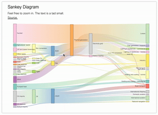

# effect

# reference
d3 version: 5.7.0
d3-sankey version: 0.7.1
- https://codepen.io/borntofrappe/pen/KrBypK
# dependency
├── d3-sankey@0.12.3
├── d3@7.2.1
├── dagre-d3@0.6.4
{ | |
"dependencies": { | |
"d3": "^7.2.1", | |
"d3-sankey": "^0.12.3", | |
"dagre-d3": "^0.6.4" | |
} | |
} |
# implementation
<template>
<div class="sankey-d3-demo">
<div class="container"></div>
</div>
</template>
<script>
import * as d3 from "d3";
import * as d3Sankey from 'd3-sankey';
import { zoom } from 'd3-zoom';
export default {
name: "SankeyD3Demo",
data() {
return {
};
},
components: {},
created() {
},
mounted() {
this.initChart()
},
methods: {
initChart(){
const container = d3.select('.container');
// visualization based on the example at the provided url
const source = 'https://beta.observablehq.com/@mbostock/d3-sankey-diagram';
const url = 'https://gist.githubusercontent.com/mbostock/ca9a0bb7ba204d12974bca90acc507c0/raw/398136b7db83d7d7fd89181b080924eb76041692/energy.json';
container
.append('h2')
.text('Sankey Diagram');
container
.append('p')
.text('Feel free to zoom in. The text is a tad small.');
container
.append('a')
.attr('href', source)
.text('Source.');
const tooltip = container
.append('div')
.attr('id', 'tooltipaaa');
// SVG frame
// the same margin, width and height are used for both visualizations
const margin = {
top: 20,
right: 20,
bottom: 20,
left: 20,
};
const width = 1000 + (margin.left + margin.right);
const height = 600 + (margin.top + margin.bottom);
const containerFrame = container
.append('svg')
.attr('viewBox', `0 0 ${width + (margin.left + margin.right)} ${height + (margin.top + margin.bottom)}`)
.append('g')
.attr('transform', `translate(${margin.left}, ${margin.top})`);
// ZOOM feature
// include a rectangle spanning the entire container, as to allow a translation on the wrapping group
containerFrame
.append('rect')
.attr('x', 0)
.attr('y', 0)
.attr('width', width)
.attr('height', height)
.attr('fill', 'transparent');
function zoomed(event) {
// 从事件对象中获取缩放的转换信息
const { x, y, k } = event.transform;
// 使用缩放信息来进行操作
containerFrame.attr('transform', `translate(${x} ${y}) scale(${k})`);
}
const zoomBehavior = zoom().on("zoom", zoomed);
containerFrame
.call(zoomBehavior);
// function creating the sankey diagram, based on an input data and frame (in which the visualization is plotted)
function createSankeyDiagram(data, frame) {
// detail a color scale
const color = d3
.scaleOrdinal(d3.schemeSet3);
// detail the sankey function
const sankey = d3Sankey
.sankey()
// limit the nodes and links within the containing group
.extent([[0, 0], [width, height]]);
// destructure the two arrays for the nodes and links in two variables
const { nodes, links } = sankey(data);
// detail in a defs block one linear gradient for each link
// detail a unique identifier as to later call the id with the specified index
const defs = frame
.append('defs');
const linearGradients = defs
.selectAll('linearGradient')
.data(links)
.enter()
.append('linearGradient')
.attr('id', d => `gradient${d.index}`)
.attr('x1', '0%')
.attr('y1', '50%')
.attr('x2', '100%')
.attr('y2', '50%');
// linear gradient going from left to right and detailing a color based on the source and target values
linearGradients
.append('stop')
.attr('offset', '0%')
.attr('stop-color', d => color(d.source.index));
linearGradients
.append('stop')
.attr('offset', '100%')
.attr('stop-color', d => color(d.target.index));
// detail a generator function for the links
const sankeyLinks = d3Sankey
.sankeyLinkHorizontal();
// append a path element for each link
// using the generator function
frame
.selectAll('path.link')
.data(links)
.enter()
.append('path')
.attr('class', 'link')
.attr('d', sankeyLinks)
.attr('fill', 'none')
// stroke using the gradient
.attr('stroke', d => `url(#gradient${d.index})`)
// stroke width based on the width of each data point
.attr('stroke-width', d => d.width)
// alter the opacity on hover
// detail also the data through a simple tooltip
.attr('opacity', 0.5)
.on('mouseenter', function (event, d) {
d3
.select(this)
.transition()
.attr('opacity', 1);
tooltip
.append('p')
.html(`<strong>${d.source.name}</strong> - <strong>${d.target.name}</strong>`);
tooltip
.append('p')
.html(`Value: <strong>${d.value}</strong>`);
const mouseX = event.pageX;
const mouseY = event.pageY;
tooltip
.style('opacity', 1)
.style('left', `${mouseX}px`)
.style('top', `${mouseY}px`);
})
.on('mouseout', function () {
d3
.select(this)
.transition()
.attr('opacity', 0.5);
tooltip
.style('opacity', 0)
.selectAll('p')
.remove();
});
// append a rectangle for each node
// using the fabricated values and the color based on the index
frame
.selectAll('rect.node')
.data(nodes)
.enter()
.append('rect')
.attr('class', 'node')
.attr('x', d => d.x0)
.attr('y', d => d.y0)
.attr('width', d => (d.x1 - d.x0))
.attr('height', d => (d.y1 - d.y0))
.attr('pointer-events', 'none')
.attr('stroke', '#555')
.attr('stroke-width', '1px')
.attr('fill', d => color(d.index));
// for each node append also a text element, detailing the respective value
// horizontally position the text after or before the rectangle elements for each node
frame
.selectAll('text.node')
.data(nodes)
.enter()
.append('text')
.text(d => d.name)
.attr('font-size', '0.75rem')
.attr('fill', '#111')
.attr('x', (d) => {
if (d.sourceLinks.length > 0) {
return d.x0 + sankey.nodeWidth() + 5;
}
return d.x0 - 5;
})
.attr('y', d => (d.y1 + d.y0) / 2)
.attr('pointer-events', 'none')
.attr('alignment-baseline', 'middle')
.attr('text-anchor', d => ((d.sourceLinks.length > 0) ? 'start' : 'end'));
}
fetch(url)
.then(response => response.json())
.then(json => createSankeyDiagram(json, containerFrame));
}
},
};
</script>
<style lang="scss">
.sankey-d3-demo{
.container{
max-width: 800px;
margin: 1rem auto;
padding: 1rem 2rem;
border-radius: 2px;
background: #FFFFFF;
box-shadow: 0 0 2px #2D2C35;
div {
margin-bottom: 1.5rem
}
p {
margin: 0.8rem 0 0.4rem
}
a {
color: inherit
}
}
}
#tooltipaaa {
pointer-events: none;
position: absolute;
opacity: 0;
padding: 1rem;
background: #FFFFFF;
box-shadow: 0 0 4px rgba(#42424E, 0.2);
line-height: 2;
transition: all 0.2s ease-out;
}
</style>